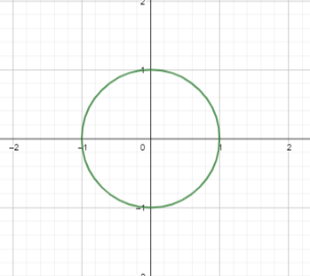

What is a Circle?
A circle is simply the set of all points that are at the same distance from a certain central point.
If we set the origin at (0,0), the unit circle is the set of all points a distance 1 from the origin. We measure the distance from the origin to \( (x,y) \) as \( \sqrt{x^2 + y^2} \), so the unit circle would be the set of all coordinates \( (x,y) \) satisfying the equation:
\( 1 = \sqrt{x^2 + y^2} \)
The solution to these equations gives us our well known form of a circle:

Unit Circle
The interesting thing is that we can generalize this idea. There seems to be no way to generalize it, what other types of circle could we think of?
We see that we actually made an assumption when constructing the circle, our definition of distance. We defined the distance from the origin to (x,y) (which we will call norm) as:
$$||(x,y)|| = \sqrt{x^2 + y^2}$$
The norm is defined this way because that is how distances work in the real world. However, in mathematics we are free to define norms that don't have anything to do with the real world and see to what we are led by these definitions.
However, we can not define a norm however we want it, there most be some restrictions for a function to be interpreted as a norm, these are:
- The norm must be a function that takes a point \( (x,y) \) and gives a non negative real number \( ||(x,y)|| \)
That is, norms cannot be negative, just as we would expect from a distance.
- Positive Definiteness: For all \( (x,y) \), if \( ||(x,y)|| = 0 \) then \( (x,y) = (0,0) \)
That is, only the origin has a norm of 0, all other points have positive norms
- Homogeneity: \( ||a(x,y)|| = |a| \cdot ||(x,y)|| \)
That is, if we scale the vector by a constant $a$, then the norm should be bigger by \( |a| \)
- Triangle inequality \( ||(x,y) + (w,z)|| \leq ||(x,y)|| + ||(w,z)|| \)
That is, if we want to go from the origin to \( (x+w,y+z) \), it is faster (or equally fast) to go directly than to go to \( ||(x,y)|| \) and then to \( ||(x,y) + (w,z)|| \).
These are some pretty restrictive conditions, still, we can find a whole family of norms that fulfill these conditions.
LP Metric
We define a new type of metric as:
$$||(x,y)||_p = (|x|^p + |y|^p)^{1/p}$$
Where \( p \) is a number with \( p \geq 1 \). We see that for \( p=2 \) we recover the old Euclidean metric, but for other values of \( p \) we have other interesting norms.
Not all norms have this particular form, but we will study only these ones
To actually call this a norm, we should prove tht it satisfies the requirements we mentioned. The first requirements are easy to see, but the last one requires a little more work and it is called the Minkowski inequality.
Circles in LP norm
Using this definition of norm, we can define circles in different norms. A unit circle in LP norm would be the set of all points with \( ||(x,y)||_p = 1 \)
That is, all points with:
\( (|x|^p + |y|^p)^{1/p} = 1 \)
\( \Rightarrow \;\; |x|^p + |y|^p = 1 \)
This is a generalization of the definition of circle. For \( p=2 \) we obtain the Euclidean circle, while for any other value of \( p \geq 1 \), we get circles in different norms and they take different forms.
In the following interactive program, you can see how unit circles in different norms would look like. You can control the value of \( p \) and see the set of solutions of \( |x|^p + |y|^p = 1 \) (that is, the circle in \( p \) norm).
We can see that the 'circles' take funny forms for different values of \( p \).
Special Cases
For special values of p, we get interesting drawings:
- \( p=2 \):
For this value, we recover the original Euclidean metric and the drawing is a regular old circle
- \( p=1 \)
For this value, the equation the metric is \( ||(x,y) || = |x| + |y| \).
That is, the distance to \( ||(x,y)|| \) is found by adding the distance along the x axis and the distance along the y axis. That is, intuitively, in this norm, we 'cannot' move in diagonal, we can only move parallel to the axis.
This is called the Manhattan norm, because this would be the distance to move around a city like Manhattan. If we want to go from a certain point in Manhattan to a point 3 streets east and 1 street north, we cannot move in diagonal, we can only move in the directions determined by the city blocks but not in diagonal.
Therefore, the distance between these two points would be of 5 = 2+3.
The metric for \( p=1 \) encapsulates this.
- \( p = \infty \)
Though this norm is not included in the program, we can think of it as the limit when $p$ gets larger. Therefore, if \( p \) is very large, we have that \( ||(x,y)||_{\infty} = \lim_{p \rightarrow \infty} (|x|^p + |y|^p)^{1/p} = \max (|x|, |y|) \)
So, the distance to a point is equal to the maximum of tis coordinates.